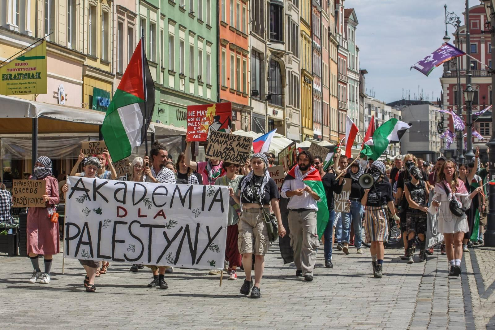
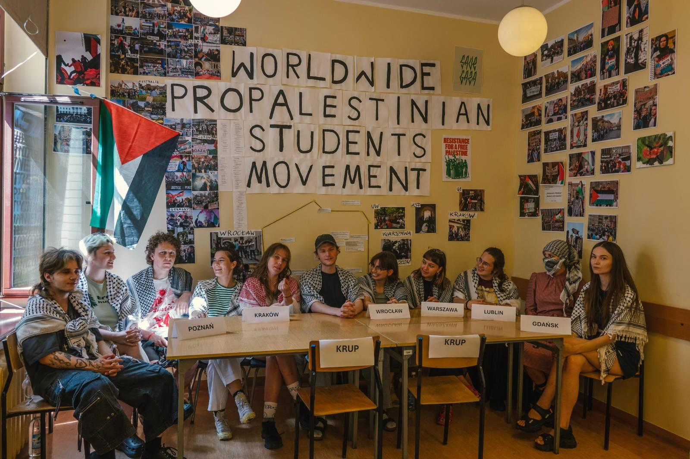
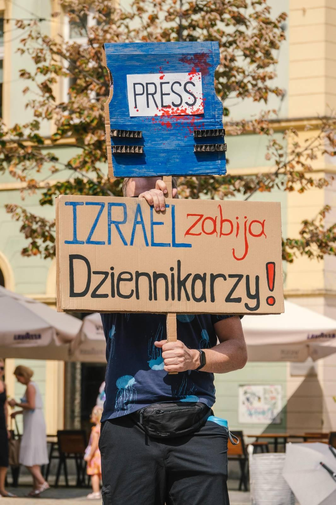
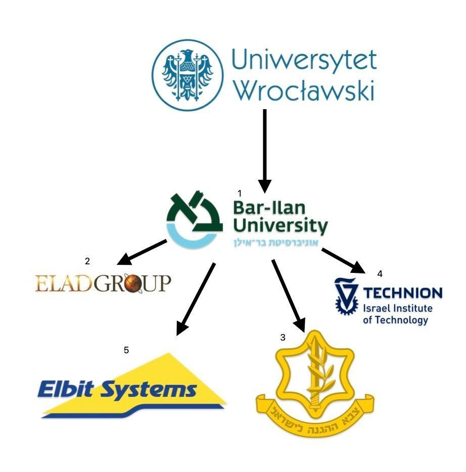
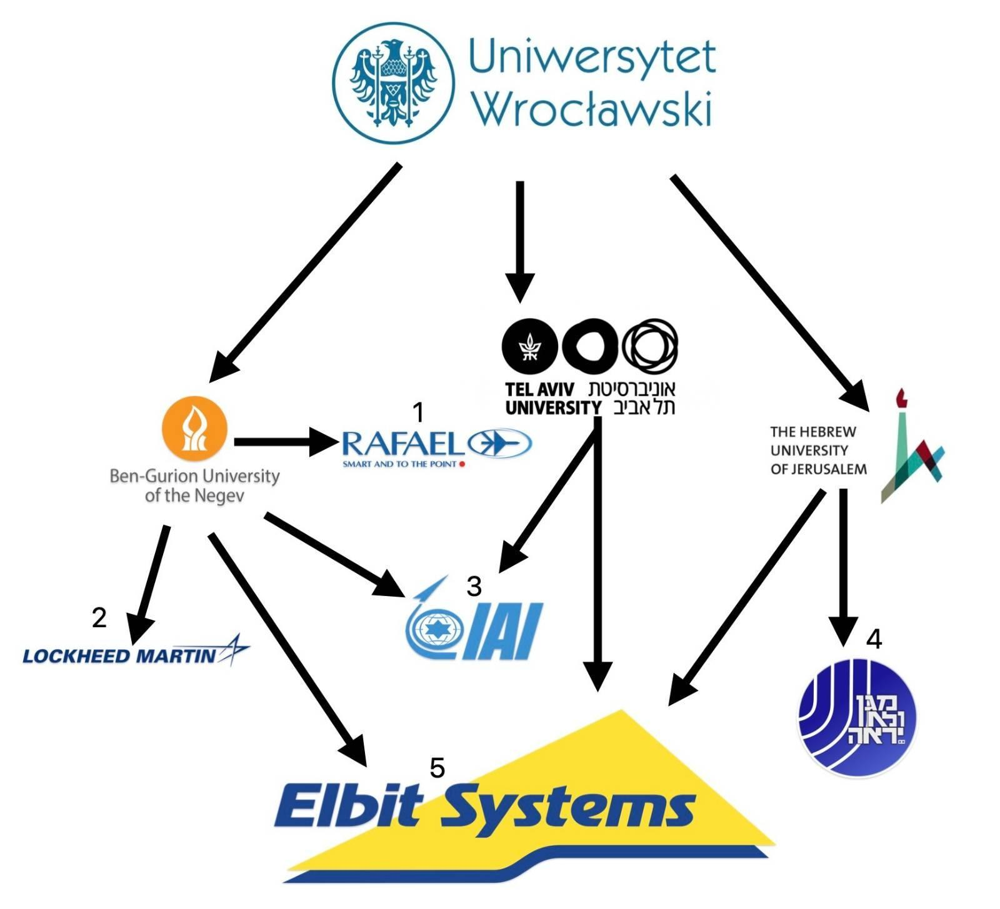

Galeria
Nasze dzieła, plakaty, zdjęcia o nas.Zdjęcia
Poniższe zdjęcia wykonał Konrad Żurawowicz (Instagram: @konradzurawowicz).

Konferencja prasowa z .
Zdjęcie z demonstracji.
Zjazd delegatów.
Banner – Izrael morduje dziennikarzy!
Plakaty
Nasze logo.
Grafiki
 Lista współprac UWr z izraelskimi uniwersytetami powiązanymi z firmami, które dokładają się do zbrodni apartheidu i ludobójstwa.